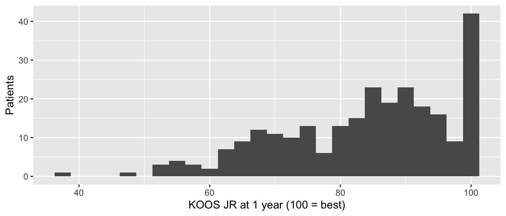
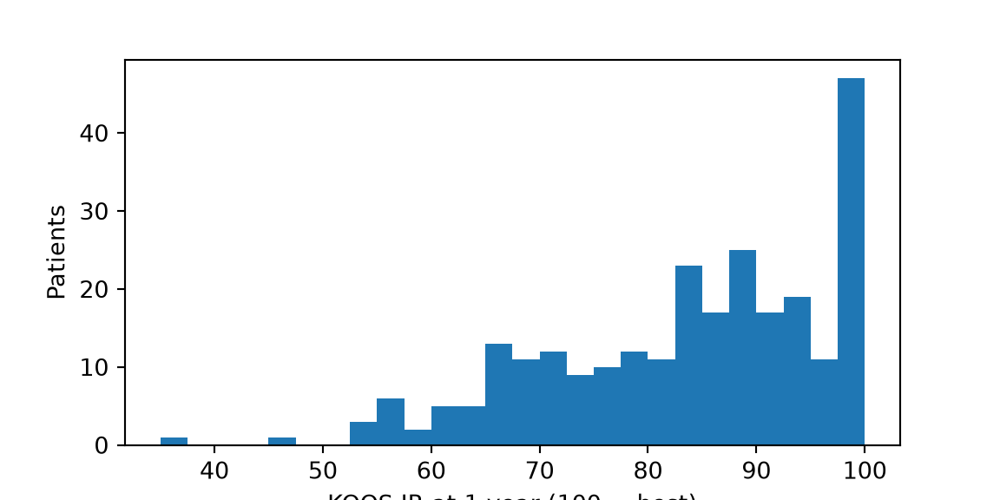
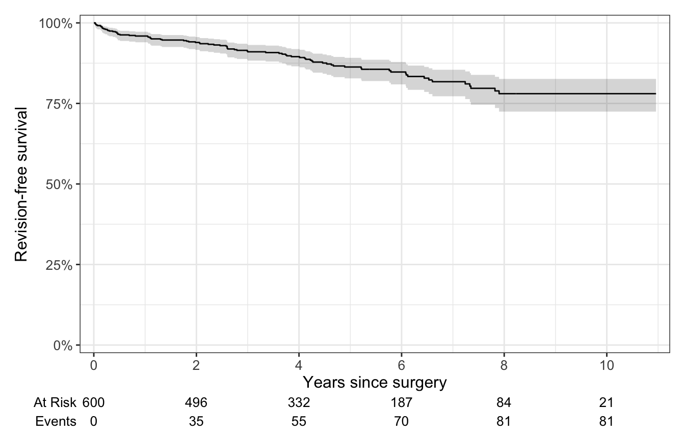
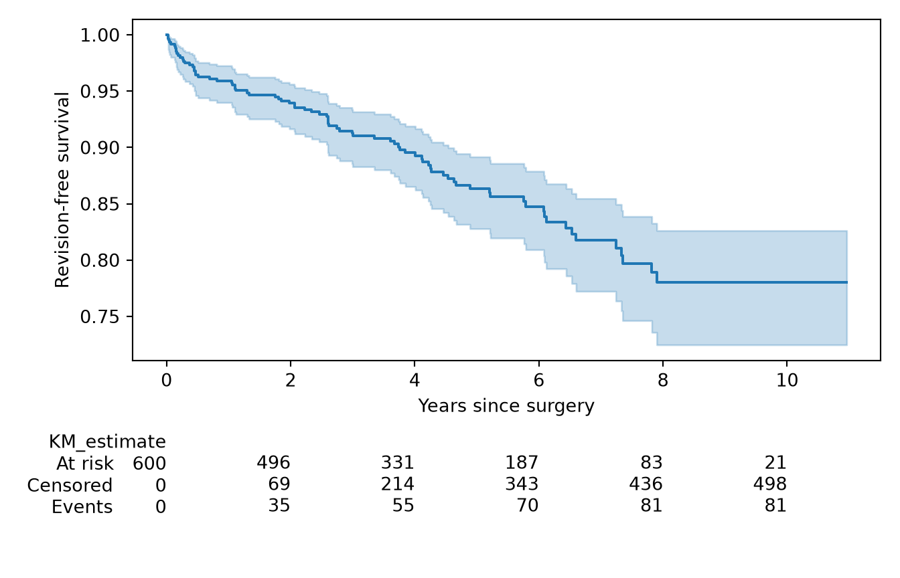

Mean and SD, median and IQR, a proportion, and a Kaplan-Meier survival curve, each with a 95% confidence interval.
Before you compare anything, describe it. This page covers the first row of the decision table: one number (or one curve) that sums up a group of patients, with a 95% confidence interval that says how precisely you know it. Which summary you use depends on the column, the type of data you have. Page 3 explains how to choose.
Note💡 How every section on this page works
Each section answers one question about the practice cohort. Its first code block loads the packages and the data, so you can jump straight to the section you need. Run that section’s blocks in order, top to bottom.
To keep the code short, the examples use every case, including the 80 patients who had both sides operated on. In a real study, decide how to handle them (page 3) and say what you did.
Mean and standard deviation
The question: How old are our patients, and how much do their ages vary?
When to use it
The variable is a measurement (age, BMI, operative time), not a category.
Its distribution is roughly symmetric, without extreme outliers. Check with a histogram (page 3).
If it’s skewed, has a ceiling or floor, or is ordinal → use the median and IQR instead.
n = cohort["age"].count()mean = cohort["age"].mean()sd = cohort["age"].std() # pandas divides by n - 1, like R# 95% CI for the mean: mean ± t × (SD / √n)age_ci = stats.t.interval(0.95, df=n -1, loc=mean, scale=sd / n **0.5)print(f"n = {n}, mean = {mean:.2f}, sd = {sd:.2f}")
n = 600, mean = 65.52, sd = 9.44
print(f"95% CI {age_ci[0]:.2f} to {age_ci[1]:.2f}")
95% CI 64.76 to 66.28
Read the output
n = 600: the number of cases with an age recorded.
Mean = 65.5 years: the average age.
SD = 9.4 years: the standard deviation, the typical distance of a patient’s age from the mean. In a bell-shaped distribution about 95% of patients lie within 2 SDs of the mean, here roughly 47 to 84 years.
95% CI 64.8 to 66.3: the confidence interval for the mean. It tells you how precisely 600 patients pin down the average age of patients like ours. It says nothing about how spread out individual patients are; that’s the SD’s job.
Note🔍 Under the hood: the CI for a mean
The standard error of the mean is SD / √n = 9.4 / √600 ≈ 0.39 years. The 95% CI is the mean ± t × standard error, where t ≈ 1.96 for large samples (it’s a little bigger for small ones). Quadruple the sample size and the standard error halves; the SD stays about the same.
How to report it
Methods: Continuous variables are reported as mean (standard deviation, SD) when approximately normally distributed.
Results: The mean age at surgery was 65.5 years (SD 9.4; 95% CI for the mean 64.8 to 66.3).
Warning⚠️ Watch out: SD or SEM?
The standard error of the mean (SEM) is much smaller than the SD (0.39 vs 9.4 years here), which is why some papers report “mean ± SEM”: it looks tidier. But it describes the precision of the mean, not your patients. Use the SD to describe patients and a 95% CI to show the precision of an estimate. Never report a bare “±” without saying which one it is.
Tip🔀 R vs Python: dividing by n or n − 1
R’s sd() and pandas’ .std() divide by n − 1 (the “sample” SD), which is what you want. NumPy’s np.std() divides by n unless you write np.std(x, ddof=1). With 600 patients the difference is tiny; with 10 it isn’t.
Median and interquartile range
The question: What’s a typical KOOS JR score 1 year after knee replacement, and how much do scores vary?
When to use it
The variable is skewed, has a ceiling or floor, has outliers, or is ordinal (an ordered scale such as satisfaction from 1 to 5).
The median is the middle value: half the patients are above it and half below. The interquartile range (IQR) runs from the 25th to the 75th percentile (the first and third quartiles), so it holds the middle half of the patients.
If the variable is a roughly symmetric measurement → the mean and SD are fine and more familiar.
library(tidyverse)proms <-read_csv("data/proms_long.csv", show_col_types =FALSE)koos_1yr <- proms |>filter(instrument =="KOOS JR", visit =="1yr", !is.na(prom_score)) |>pull(prom_score)ggplot(tibble(score = koos_1yr), aes(score)) +geom_histogram(binwidth =2.5) +labs(x ="KOOS JR at 1 year (100 = best)", y ="Patients")

import numpy as npimport pandas as pdimport matplotlib.pyplot as pltfrom scipy import statsproms = pd.read_csv("data/proms_long.csv")koos_1yr = proms.loc[(proms["instrument"] =="KOOS JR") & (proms["visit"] =="1yr"),"prom_score"].dropna()fig, ax = plt.subplots(figsize=(6, 3))ax.hist(koos_1yr, bins=np.arange(35, 102.5, 2.5))ax.set_xlabel("KOOS JR at 1 year (100 = best)")ax.set_ylabel("Patients")plt.show()

Scores pile up against the maximum of 100 (a ceiling), with a long tail of patients who did less well. A mean would be dragged down by that tail; the median isn’t.
quantile(koos_1yr, probs =c(0.25, 0.50, 0.75)) # first quartile, median, third quartile
25% 50% 75%
74.700 85.750 93.925
DescTools::MedianCI(koos_1yr, method ="exact") # the median with its 95% CI
median lwr.ci upr.ci
85.75 84.00 88.20
attr(,"conf.level")
[1] 0.959506
print(len(koos_1yr)) # how many patients
260
print(np.quantile(koos_1yr, [0.25, 0.50, 0.75])) # first quartile, median, third quartile
[74.7 85.75 93.925]
# scipy has no "median CI" function, but quantile_test() reports one.# Its q argument is the value it would test against; it doesn't change the CI.median_ci = stats.quantile_test(koos_1yr, q=koos_1yr.median(), p=0.5).confidence_interval()print(median_ci)
n = 260: TKA patients with a 1-year KOOS JR score.
Median = 85.8: half the patients scored above 85.8, half below.
IQR 74.7 to 93.9: the middle half of patients scored between these two values. A quarter scored below 74.7.
95% CI for the median 84.0 to 88.2: how precisely 260 patients pin down the median.
Note🔍 Under the hood: where the median’s CI comes from
The CI for a median uses no formula with an SD in it. It counts instead. Sort the scores, then pick two positions such that, if the study were repeated many times, the true median would fall between the scores at those positions at least 95% of the time. The binomial distribution says which positions those are, and the CI is the pair of scores sitting there. Because positions are whole numbers, the actual confidence is a little over 95% (R reports 0.9595 here). This “exact” method needs no assumption about the shape of the data.
How to report it
Methods: Continuous variables that were skewed or bounded are reported as median (interquartile range, IQR).
Results: The median 1-year KOOS JR was 85.8 points (IQR 74.7 to 93.9; 95% CI for the median 84.0 to 88.2).
Warning⚠️ Watch out: report the IQR as two numbers
Write “IQR 74.7 to 93.9”, not “IQR 19.2” (the width). Readers want to know where the middle half of patients sits, not just how wide it is. And don’t report a median with an SD: they belong to different summaries.
Tip🔀 R vs Python: quartiles
R’s quantile() and NumPy’s np.quantile() use the same default method (R calls it “type 7”), so they agree. Other software doesn’t always: gtsummary, SPSS and SAS can give slightly different quartiles on the same data (page 2 shows an example). Say which software you used.
Proportion
The question: What proportion of procedures were followed by a complication within 90 days?
When to use it
The outcome is yes/no (binomial): complication, readmission, discharge home.
Report the count, the percentage, and a 95% CI for the percentage.
If patients were followed for different lengths of time and the event can happen at any time (revision, death) → use a Kaplan-Meier curve instead.
Look at the data first
For a yes/no variable, “looking” means counting, including the missing values.
51 of 600 = 0.085: a complication followed 8.5% of procedures.
95% CI 0.065 to 0.110: the true complication rate for patients like ours is plausibly anywhere from 6.5% to 11.0%.
How to report it
Methods: Categorical variables are reported as number (percentage). 95% confidence intervals for proportions were calculated with the Wilson score method.
Results: A complication within 90 days followed 51 of 600 procedures (8.5%; 95% CI 6.5% to 11.0%).
Warning⚠️ Watch out: percent of what?
Say what the denominator is. Here it’s 600 procedures. Our 80 bilateral patients count twice, so it isn’t a percentage of patients. If some outcomes were missing, the denominator is the patients with a known outcome; say how many were missing.
Don’t use the simple “± 1.96 standard errors” CI (the Wald interval) for proportions. For rare events it can dip below 0%. The Wilson interval doesn’t.
Tip🔀 R vs Python: which CI for a proportion?
R’s prop.test() gives the Wilson interval, but adds a continuity correction unless you set correct = FALSE. scipy’s proportion_ci() calls the uncorrected version "wilson" and the corrected one "wilsoncc". R’s binom.test() and scipy’s method="exact" give the more conservative Clopper-Pearson interval (page 5 uses it). All are acceptable; say which you used.
Kaplan-Meier survival curve
The question: What proportion of implants are still unrevised 5 years after surgery?
When to use it
The outcome is time until an event (revision, death), and patients were followed for different lengths of time.
Some patients are censored: their follow-up ended (the study closed, they moved away, they died) before any revision. We know they went at least that long without one.
A plain percentage (“13.5% were revised”) ignores follow-up time: a patient operated on last year hasn’t had time to need a revision. The Kaplan-Meier method uses each patient’s follow-up for as long as it lasts.
Page 13 covers survival analysis in depth. This section shows the basic curve.
library(tidyverse)library(survival)library(ggsurvfit)cohort <-read_csv("data/cohort.csv", show_col_types =FALSE)# followup_years: time from surgery to revision or censoring; revised: 1 = revised, 0 = censoredcohort |>select(case_id, followup_years, revised) |>head(5)
import pandas as pdimport matplotlib.pyplot as pltfrom lifelines import KaplanMeierFitterfrom lifelines.plotting import add_at_risk_countscohort = pd.read_csv("data/cohort.csv")# followup_years: time from surgery to revision or censoring; revised: 1 = revised, 0 = censoredprint(cohort[["case_id", "followup_years", "revised"]].head(5))
Each row needs exactly two things: how long the patient was followed and whether the follow-up ended with the event (1) or was censored (0). The first case was followed for 6.2 years without a revision; the fifth was revised at 5.8 years.
km <-survfit2(Surv(followup_years, revised) ~1, data = cohort,conf.type ="log-log") # the CI method lifelines useskm |>ggsurvfit() +add_confidence_interval() +add_risktable() +scale_ggsurvfit() +labs(x ="Years since surgery", y ="Revision-free survival")

summary(km, times =5) # the estimate at 5 years
Call: survfit(formula = Surv(followup_years, revised) ~ 1, data = cohort,
conf.type = "log-log")
time n.risk n.event survival std.err lower 95% CI upper 95% CI
5 263 66 0.863 0.0162 0.828 0.892
km = KaplanMeierFitter()km.fit(cohort["followup_years"], event_observed=cohort["revised"])
<lifelines.KaplanMeierFitter:"KM_estimate", fitted with 600 total observations, 519 right-censored observations>
fig, ax = plt.subplots(figsize=(7, 4.5))km.plot_survival_function(ax=ax, legend=False)ax.set_xlabel("Years since surgery")ax.set_ylabel("Revision-free survival")add_at_risk_counts(km, ax=ax)plt.tight_layout()plt.show()

# the estimate and its 95% CI at 5 yearsat_5 = km.survival_function_at_times(5).iloc[0]ci_5 = km.confidence_interval_survival_function_.loc[:5].iloc[-1] # last step at or before 5 yearsprint(at_5, ci_5.to_list())
The curve starts at 100% and steps down at each revision. Censored patients don’t make it step; they just leave the group “at risk”.
The shaded band is the 95% CI. It widens to the right as fewer patients remain under follow-up.
The numbers at risk under the plot show how many patients were still being followed at each time. Trust the right-hand end of the curve less: by 10 years only a handful remain.
At 5 years: survival 0.863 (95% CI 0.828 to 0.892), with 263 patients still at risk.
How to report it
Methods: Implant survivorship was estimated with the Kaplan-Meier method, with revision for any reason as the end point. Patients were censored at death or at their last follow-up.
Results: Revision-free survival at 5 years was 86.3% (95% CI 82.8% to 89.2%; 263 patients at risk).
Warning⚠️ Watch out: death isn’t just “lost to follow-up”
Treating deaths as censored, as here, assumes the patients who died would have gone on to be revised at the same rate as everyone else. They can’t be: a patient who has died can never be revised. When many patients die during follow-up, 1 minus the Kaplan-Meier estimate overstates the risk of revision. Page 13 shows the competing-risks method that fixes this.
Tip🔀 R vs Python: the confidence band
R’s survfit() uses a “log” CI by default; lifelines uses “log-log”. The estimates are identical but the CIs differ slightly. We set conf.type = "log-log" in R so the two match. Log-log keeps the CI between 0% and 100%; say which you used.
Exercises
The solutions use the packages and data loaded in the sections above, so run the page from the top first.
1. Describe BMI in the cohort with a mean, SD and 95% CI for the mean. Check the histogram first: is the mean a fair summary?
The histogram is roughly symmetric, so the mean is a fair summary.
Results: Mean BMI was 30.4 kg/m² (SD 5.4; 95% CI for the mean 30.0 to 30.9).
2. A resident wants to summarize length of stay in a Table 1 as “0.9 ± 1.1 days”. What would you suggest instead, and why? Compute it.
TipSolution
Length of stay is strongly right-skewed (most patients go home on day 0 or 1, a few stay 4 to 6 days), so report the median (IQR). “±” is also ambiguous: SD or SEM?